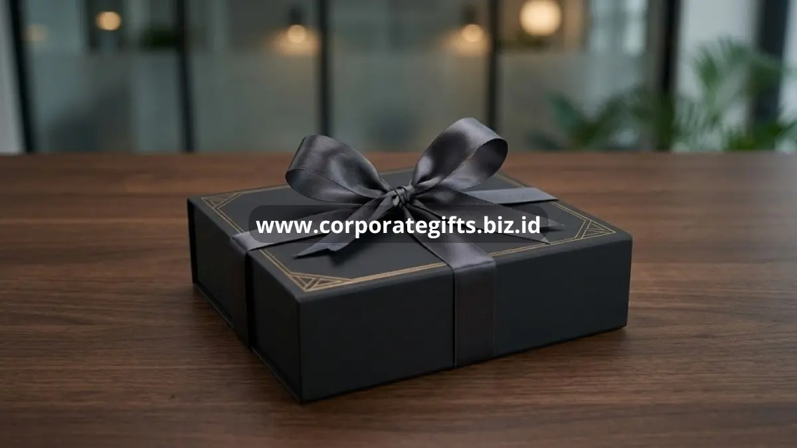

Poin Penting:
- Premium gifts untuk klien berfungsi sebagai investasi hubungan bisnis jangka panjang, bukan sekadar formalitas seremonial.
- Kualitas material, personalisasi, dan kemasan menjadi tiga faktor utama yang menentukan kesan premium sebuah hadiah korporat.
- Waktu pemberian yang tepat, seperti penutupan kontrak atau akhir tahun, memperbesar dampak emosional hadiah bagi klien.
- Kesalahan umum seperti memilih hadiah generik atau mengabaikan preferensi klien dapat menurunkan efektivitas program gifting.
- CorporateGifts menyediakan koleksi premium gifts untuk klien yang dirancang khusus untuk kebutuhan perusahaan di Indonesia.
Premium gifts untuk klien adalah hadiah korporat bernilai tinggi yang diberikan perusahaan untuk memperkuat relasi bisnis, menunjukkan apresiasi, dan membangun kesan profesional yang tahan lama di mata mitra atau pelanggan penting.
Apa Itu Premium Gifts untuk Klien?
Premium gifts untuk klien adalah kategori hadiah korporat dengan kualitas material, desain, dan kemasan di atas rata-rata, yang secara khusus dipilih untuk merepresentasikan citra perusahaan pemberi. Berbeda dengan souvenir promosi massal, premium gifts biasanya diberikan dalam jumlah terbatas kepada klien, mitra strategis, atau stakeholder penting.
Entitas ini mencakup berbagai bentuk produk, mulai dari perlengkapan kantor eksklusif, produk kulit premium, hingga hampers custom bertema perusahaan. Karakteristik utamanya adalah kesan eksklusif yang dirasakan penerima saat membuka kemasan, bukan sekadar fungsi barang itu sendiri.
Bagi siapa premium gifts untuk klien relevan? Jawabannya adalah perusahaan lintas skala, mulai dari korporasi besar hingga UMKM yang ingin membangun relasi jangka panjang dengan klien strategis, investor, atau mitra distribusi.
Mengapa Premium Gifts Penting bagi Hubungan Bisnis dengan Klien?
Premium gifts penting karena menjadi representasi nyata dari apresiasi perusahaan terhadap kepercayaan yang diberikan klien, sekaligus memperkuat pengingat visual terhadap brand dalam jangka panjang.
Secara umum, hubungan bisnis yang sehat dibangun dari kombinasi kualitas layanan dan sentuhan personal. Premium gifts mengisi ruang personal tersebut dengan cara yang elegan dan tidak berlebihan. Ketika klien menerima hadiah yang terasa dipikirkan secara khusus, persepsi mereka terhadap profesionalisme perusahaan cenderung meningkat.
Selain itu, premium gifts turut berperan dalam strategi retensi. Klien yang merasa dihargai secara konsisten lebih cenderung mempertahankan kerja sama dan merekomendasikan perusahaan kepada jaringan bisnis mereka. Dalam konteks ini, hadiah bukan sekadar barang, melainkan bagian dari komunikasi non-verbal perusahaan.
Riset pemasaran korporat secara umum menunjukkan bahwa program apresiasi klien yang konsisten, termasuk pemberian hadiah bermakna pada momen-momen penting, berkontribusi pada tingkat loyalitas pelanggan bisnis yang lebih tinggi dibandingkan perusahaan yang tidak menjalankan program serupa.
Bagaimana Ciri Premium Gifts yang Berkualitas untuk Klien?
Premium gifts berkualitas ditandai oleh material tahan lama, desain minimalis-elegan, personalisasi yang relevan, serta kemasan yang mencerminkan standar presentasi korporat profesional.
Material dan Daya Tahan
Material menjadi indikator pertama yang dinilai penerima. Bahan seperti kulit asli, logam berlapis premium, kayu solid, atau kristal umumnya memberikan kesan lebih mewah dibandingkan plastik atau bahan sintetis murah. Daya tahan material juga penting agar hadiah tetap relevan digunakan dalam jangka waktu lama, sehingga brand recall terhadap perusahaan pemberi berlangsung lebih panjang.
Personalisasi yang Relevan
Personalisasi tidak selalu berarti mencetak logo perusahaan secara mencolok. Personalisasi yang efektif justru mempertimbangkan preferensi, jabatan, atau kebutuhan spesifik klien penerima. Ukiran nama, warna korporat yang disesuaikan secara halus, atau pemilihan jenis produk berdasarkan industri klien dapat meningkatkan nilai emosional hadiah secara signifikan.
Kemasan dan Presentasi
Kemasan sering kali menjadi kesan pertama sebelum klien melihat produk itu sendiri. Kemasan premium umumnya menggunakan material rigid box, finishing matte atau soft-touch, serta detail seperti pita atau kartu ucapan personal. Presentasi yang rapi menandakan perhatian perusahaan terhadap detail, yang secara tidak langsung mencerminkan standar kerja perusahaan tersebut.

Kapan Waktu Tepat Memberikan Premium Gifts kepada Klien?
Waktu terbaik memberikan premium gifts kepada klien adalah pada momen strategis seperti penutupan kontrak, ulang tahun perusahaan klien, akhir tahun, atau pencapaian target kerja sama bersama.
Momen-momen ini dipilih karena memiliki nilai emosional dan simbolis yang tinggi bagi penerima. Pemberian hadiah pada saat penandatanganan kontrak baru, misalnya, dapat memperkuat kesan awal yang positif terhadap kemitraan. Sementara itu, hadiah akhir tahun sering dijadikan momentum refleksi hubungan bisnis selama satu tahun terakhir.
Selain momen formal, perusahaan juga dapat mempertimbangkan momen personal klien seperti promosi jabatan, pensiun, atau pencapaian pribadi lain yang relevan dengan hubungan bisnis. Pendekatan ini menunjukkan bahwa perusahaan melihat klien sebagai individu, bukan sekadar entitas transaksional.
Apa Kesalahan Umum dalam Memilih Premium Gifts untuk Klien?
Kesalahan umum dalam memilih premium gifts meliputi pemilihan hadiah generik tanpa riset, dominasi logo yang berlebihan, serta pengabaian terhadap konteks budaya atau preferensi personal klien.
Hadiah generik yang dibeli secara massal tanpa pertimbangan karakter penerima sering kali terasa impersonal dan mudah dilupakan. Demikian pula, logo perusahaan yang terlalu dominan pada desain produk dapat membuat hadiah terkesan sebagai alat promosi murni, bukan bentuk apresiasi tulus.
Kesalahan lain yang cukup sering terjadi adalah mengabaikan konteks budaya, agama, atau kebiasaan klien, terutama pada relasi bisnis lintas wilayah atau internasional. Sensitivitas terhadap konteks ini penting agar hadiah diterima secara positif tanpa menimbulkan kesalahpahaman.
Terakhir, banyak perusahaan kurang memperhatikan timing pengiriman, sehingga hadiah tiba terlambat dari momen yang seharusnya dirayakan bersama klien. Perencanaan yang matang membantu memastikan setiap hadiah tiba tepat waktu dan tepat sasaran.
Bagaimana Cara Memastikan Premium Gifts Sesuai dengan Identitas Perusahaan?
Premium gifts dapat mencerminkan identitas perusahaan melalui konsistensi warna, gaya desain, dan pemilihan kategori produk yang selaras dengan nilai serta citra brand secara keseluruhan.
Konsistensi visual antara hadiah dan identitas brand membantu memperkuat pengenalan perusahaan di benak klien. Misalnya, perusahaan dengan citra modern dan minimalis cenderung lebih cocok memberikan produk dengan desain clean dan warna netral, dibandingkan produk bermotif ramai.
Selain aspek visual, pemilihan kategori produk juga sebaiknya relevan dengan industri perusahaan. Perusahaan di sektor teknologi misalnya dapat mempertimbangkan produk fungsional yang mendukung produktivitas kerja, sementara perusahaan di sektor keuangan sering memilih produk dengan kesan formal dan elegan.
Premium gifts untuk klien bukan sekadar pelengkap seremonial, melainkan instrumen strategis dalam membangun dan menjaga hubungan bisnis jangka panjang. Kualitas material, personalisasi yang relevan, ketepatan waktu pemberian, serta kesesuaian dengan identitas perusahaan menjadi faktor penentu keberhasilan sebuah program gifting korporat.
Jika perusahaan Anda ingin memberikan kesan elegan dan profesional kepada klien penting, CorporateGifts menyediakan koleksi premium gifts untuk klien yang dirancang khusus untuk kebutuhan korporat di Indonesia. Hubungi CorporateGifts sekarang untuk konsultasi pemilihan hadiah yang sesuai dengan identitas dan tujuan bisnis Anda.
FAQ
1. Apa yang dimaksud dengan premium gifts untuk klien?
Premium gifts untuk klien adalah kategori hadiah korporat dengan kualitas material, desain, dan kemasan di atas rata-rata, yang secara khusus dipilih untuk merepresentasikan citra perusahaan pemberi.
2. Mengapa premium gifts penting untuk relasi bisnis?
Premium gifts penting karena menjadi representasi nyata dari apresiasi perusahaan terhadap kepercayaan yang diberikan klien, sekaligus memperkuat pengingat visual terhadap brand dalam jangka panjang.
3. Apa saja ciri-ciri premium gifts yang berkualitas?
Premium gifts berkualitas ditandai oleh material tahan lama, desain minimalis-elegan, personalisasi yang relevan, serta kemasan yang mencerminkan standar presentasi korporat profesional.
4. Kapan waktu yang tepat untuk memberikan premium gifts?
Waktu terbaik adalah pada momen strategis seperti penutupan kontrak, ulang tahun perusahaan klien, akhir tahun, atau pencapaian target kerja sama bersama.
5. Apa kesalahan umum dalam memilih premium gifts?
Kesalahan umum meliputi pemilihan hadiah generik tanpa riset, dominasi logo yang berlebihan, pengabaian terhadap konteks budaya, dan kurang memperhatikan timing pengiriman.
Butuh rekomendasi cepat untuk corporate gift?
Chat tim Pusat Souvenir & Merchandise Kantor untuk kurasi pilihan sesuai budget & kebutuhan brand Anda.